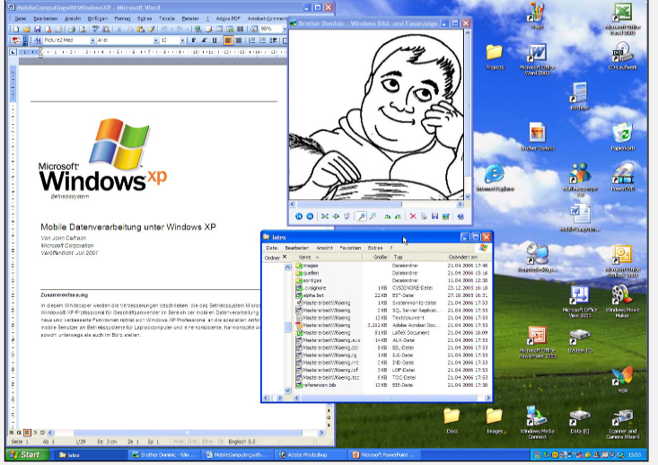

Human Computer Interaction
Human Computer Interaction (HCI) ist eine Disziplin, welche sich mit dem entwickeln, evaluieren und der Implementierung von interaktiven Systemen befasst. Als Grundlage dabei dient die Beobachtung des Umfelds. Wichtig an dieser Stelle zu erwähnen ist es, dass diese verschiedenen Diszipline sich in einem wiederholenden Entwicklungsprozess (User Centered Design Prozess, etc.) befinden. HCI besteht aus einer Vielzahl von unterschiedlichen Disziplinen:
- Design
- Psychologie
- Engineering
- Computer Science
Definitionserklärungen
Definition Usability
Usability definiert, wie einfach ein bestimmtes Produkt innerhalb eines Nutzungskontextes genutzt werden kann um einfach, effizient und zufriedenstellend die Ziele des Nutzers zu erreichen.
Definition Nutzungskontext
Beschreibt die physische und soziale Umgebung, in welcher ein Produkt verwendet wird. Ist das Produkt für die Umgebung geeignet, in der es verwendet wird?
Definition Effektivität
Genauigkeit und Vollständigkeit unter welchem der Nutzer das Ziel mit Hilfe des Computers erreichen kann. Beispielsweise der Grad der Zielerreichung in Prozent
Definition Effizienz
Aufwand mit welchem der Nutzer ein bestimmtes Ziel erreicht. Beispielsweise die Tastenanschläge pro Minute
Definition Zufriedenstellung
Freiheit von Beeinträchtigung und positive Einstellung gegenüber der Nutzung des Produktes.
Definition User Experience
Reaktion, Emotionen und Wahrnehmungen des Nutzers bei der Interaktion mit dem Produkt vor, während und nach der Nutzung.
WIMP
WIMP steht für Windows, Menus, Icons and Pointers in Bezug auf die Desktop Metapher
Desktop Metapher
Die Desktop Metapher stellt im Gegensatz zur Kommandzeile ein neuer Ansatz zur Interaktion mit dem Computer dar:
- Direkte visuelle Manipulation von Objekten
- Sichtbarkeit von Objekten und Aktionen
- Schnelle, umkehrbare Aktionen
 XEROX Star 1981
Vorteile im Gegensatz zur Kommandozeile
- Schnelles Erlernen und Wiedererinnern
- Fehleranfälligkeit durch Syntax wird vermieden
- Fördert exploratives Erforschen
Nachteile im Gegensatz zur Kommandozeile
- Teilweise geringere Effizienz
- Teilweise reduzierte Funktionen
Definition Natural User Interfaces
Umfasst alle Interaktionsformen, welche über WIMP hinausgehen und sich an den sensor motorischen Fähigkeiten des Menschen orientieren. Mit natürlich ist hierbei eine natürliche Eingabeform sowie eine selbsterklärende Bedienung gemeint.
Definition Ubiquitous Computing
Unter Ubiquitous Computing wird verstanden, dass der Computer allgegenwärtig und in unser Umfeld nahezu unsichtbar integriert ist.
Gulf of Execution
Kluft zwischen den beabsichtigten Handlungen und den möglichen Aktionen.
Gulf of Evaluation
Kluft zwischen den Ausgaben des Systems und der korrekten Interpretation
Irrtümer (Mistakes)
Falsche Handlungen zum Erreichen des Ziels.
Fehlleistungen (Slips)
Richtige Handlung falsch ausgeführt
Multimodale Interaktion
Multimodale Interaktion kombiniert zwei oder mehr Input Modi (beispielsweise Touch und Speech) miteinander.
Input Device State
Gibt an, in welchem Zustand die Input Geräte sind. Im Falle eines Button hat dieser beispielsweise die Zustände gedrückt sowie nicht gedrückt.
Interaktionsstyle
Grundsätzlich kann zwischen zwei verschiedenen Interaktionsstilen unterschieden werden. Dies ist zum Einen die Interaktion per Kommando via Kommandozeile und zum Anderen die Interaktion mittels Dialogen (GUIs).
DMI
Unter DMI wird Direkte Manipulation verstanden. Bei einem klassichen GUI wäre dies über Tastatur, Bildschirm und Maus, wobei Input und Output getrennt sind. Bei Smartphones hingegen ist der Input und Output direkt miteinander verbunden und wird via Touch oder Pen ermöglicht.
User-Centered Design Process
Der User-Centered Design Prozess bezweckt Produkte und Dienstleistungen zu entwickeln, welche reale Bedürfnisse der Nutzer adressieren.
Menschenzentriert
Menschenzentriert bedeutet, den Menschen kontinuierlich in den Prozess miteinzubeziehen.
User Experience Design
User Experience Design bietet einen systematischen, wissenschaftlich fundierten Ansatz, mit dem die Gebrauchstauglichkeit eines Produktes sichergestellt werden kann.
Buxton's Law
Buxton's Law besagt, dass der Mensch nur eine eingeschränkte kognitive Fähigkeit besitzt (Human Capacity). Der Mensch kann beispielsweise Kunden beraten, wenn er jedoch noch eine komplizierte Software bedienen muss, welche seine kognitiven Fähigkeiten übersteigt, funktioniert dies nicht.
Wireflows
Wireflows sind ein Designspezifikationsformat dass
Wireframesmit einemAblaufdiagrammkombiniert umInteratkion darzustellen.
Wireframes
Wireframes sind eine
vereinfachte Darstellung einer Benutzerschnittstelleund zeigen dasLayout in Form eines Drahtgerüstesauf.
Prototyp
Ein Prototyp ist ein
funktionsfähiges aber vereinfachtes Produktfür einenbestimmten Zweck. Es kann dabei reinäusserlich oder technischdem Endprodukt entsprechend.
User Experience Evaluation
Ist die Bewertung der User Experience einer Lösung in
Hinblick daruaf, wie gut sie die Benutzer unterstützt um ihre Ziele zu erreichen
Qualitative Studien
Liefern Daten über
Verhaltensweisen oder Einstellungenauf Grundlagedirekter Beobachtung. Sind gut geeignet um zu beantwortenwarum oder wie ein Problem zu lösen ist.
Quantitative Studien
Daten über Verhalten oder Einstellung werden
indirekt über eine Messungerhoben. Beantwortet die Frage nach demWieviel.
Natural Produktverwendung
Natürliche oder naturnahe Verwendung des Produktes. Kann über
Field Studies ermittelt werden.
Scripted Produktverwendung
Gezielte Nutzung des Produktes. Kann über
Usability Studies ermittelt werden.
Limited Produktverwendung
Begrenze Nutzung um einen
bestimmten Aspekt der Benutzererfahrung zu untersuchenKann überCard Sorting ermittelt werden
Decontextualized Produktverwendung
Keine Verwendung
des Produktes während der Studie. Kann über eineSurvey ermittelt werden.
Externe Validität
Ist das Testen des Produktes im
echten Umfeld, d.h. im Feld draussen
Interne Validität
Ist das Testen des Produktes in einer
sicheren und kontrollierten Umgebung, d.h. im Labor